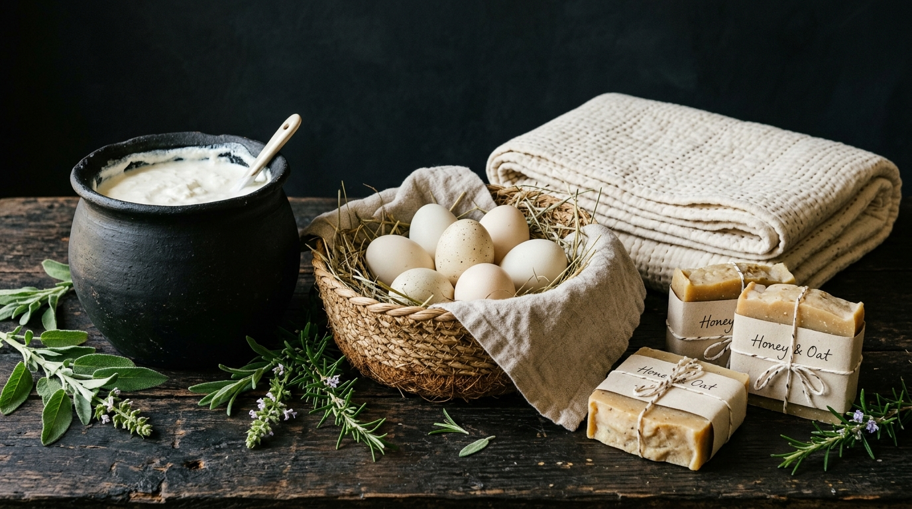

Reclaiming What Industrial Agriculture Forgot
Modern mass production severed the sacred connection between human wellness and the soil beneath our feet. Vegetables stripped of minerals, soaps loaded with synthetic detergents, and grains bleached of life.
We founded Purreins Frequency to prove there is another way: where ducks graze freely along wetland reeds, whole herbs thrive on rich natural compost, and handcrafted curd soap cured patiently over 6 weeks provides pure nourishment to human skin.

1. Living Soil Permaculture
We nurture fungal mycorrhizae and earthworm biology, producing mineral-rich crops with unmatched vitality.
2. Zero Synthetic Toxins
No synthetic fragrances, parabens, phthalates, glyphosate, or chemical fertilizers. 100% natural.
3. Ethical Free-Roaming Ducks
Our flock lives naturally on wetland ponds and grass paddocks, laying nutrient-packed golden eggs.
4. Heirloom Craftsmanship
Hand-pieced cotton quilts and artisan soaps created slowly by experienced craft hands.
5. Zero-Waste Philosophy
Compostable packaging, organic recycling, and solar-curing for minimal ecological footprint.